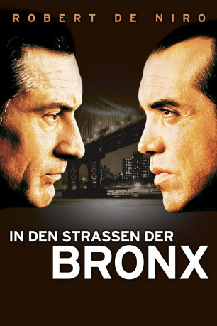

#5089 In den Straßen der Bronx
Alternativ: A Bronx Tale
 
 IMDB-Wertung: 7.8 / 10
IMDB-Wertung: 7.8 / 10  Metascore: 0
Metascore: 0 
Calogero wächst während der 60er in der Bronx auf. Einerseits hat er ein gutes Verhältnis zu seinem Vater, dem ehrlichen Busfahrer Lorenzo, andererseits entwickelt er eine enge Beziehung zum charismatischen Gangsterboss Sonny. Mehr und mehr muss Lorenzo mit ansehen, wie sein Junge unter den schlechten Einfluss Sonnys gerät. Sowohl Lorenzo als auch Sonny prägen Calogero auf seinem Weg vom Kind zum Jugendlichen. Die Durchsetzungsfähigkeit des Mafia-Paten beeindruckt Calogero nachhaltig, der zusammen mit seinen Freunden immer öfter in kriminelle Aktivitäten verwickelt wird. Das Gemisch aus menschlicher Nähe und Gewalt, das sein soziales Umfeld prägt wird zu einer Schule für Calogero. Er muss lernen, dass die Bronx sowohl gefahren als auch Chancen bereit hält.
Jahr: 1993
Dauer: 121 Minuten
FSK: 12
Land: USA Studio: Savoy PicturesTonspuren:
Untertitel:
Auflösung: 1080p (1920x1088) Größe: 12595 MB
Genre: Drama, Krimi
Regisseur:  Robert De Niro
Robert De Niro
Drehbuch: Hsin Yi Chang
Soundtrack:
Darsteller:
 Robert De Niro als Lorenzo
Robert De Niro als Lorenzo Chazz Palminteri als Sonny
Chazz Palminteri als Sonny- Lillo Brancato als Calogero, Age 17
 Francis Capra als Calogero, Age 9
Francis Capra als Calogero, Age 9- Taral Hicks als Jane
 Kathrine Narducci als Rosina
Kathrine Narducci als Rosina Joe Pesci als Carmine
Joe Pesci als Carmine Joseph D'Onofrio als Slick, Age 17
Joseph D'Onofrio als Slick, Age 17 Louis Vanaria als Crazy Mario, Age 17
Louis Vanaria als Crazy Mario, Age 17- Patrick Borriello als Slick, Age 9
- Rocco Parente als Driver, Hey Marie!
 Richard DeDomenico als Priest
Richard DeDomenico als Priest Domenick Lombardozzi als Nicky Zero
Domenick Lombardozzi als Nicky Zero- Gianna Palminteri als Tina
 Derrick Simmons als Angry Neighbor
Derrick Simmons als Angry Neighbor Garry Pastore als Chez Bippy Customer
Garry Pastore als Chez Bippy Customer- Damian Bailey als Willie's Friend - Bicyclist , uncredited
- Alex Ballar als School Kid , uncredited
- Julia Campanelli als Gooma at Chez Bippy's , uncredited
 William DeMeo als Italian Guy in Bronx Playing Stickball , uncredited
William DeMeo als Italian Guy in Bronx Playing Stickball , uncredited- Peter Gaudio als Street man , uncredited
- John Hoyt als Chez Bippy Customer , uncredited
- Ronnie Marmo als Neighborhood Kid , uncredited
 Kresh Novakovic als Street Kid , uncredited
Kresh Novakovic als Street Kid , uncredited- Judy Prianti als Sophia - Beautician , uncredited
- James Sampson als Young Protester , uncredited
- Vincenzo Vaccaro als Shoe Shine Boy , uncredited
- Clem Caserta als Jimmy Whispers
- Alfred Sauchelli Jr. als Bobby Bars
- Frank Pietrangolare als Danny K.O.
- Robert D'Andrea als Tony Toupee
- Eddie Montanaro als Eddie Mush
- Fred Fischer als JoJo the Whale
- Dave Salerno als Frankie Coffeecake
- Luigi D'Angelo als Aldo, Age 17
- Dominick Rocchio als Ralphie, Age 17
- Paul Perri als Crazy Mario, Age 9
- Thomas A. Ford als Phil the Peddler
- Joe Black als Murdered Man
- Louis Gioia als Last Rites Priest
- Mitch Kolpan als Detective Belsik
- Phil Foglia als Detective Vella
- Max Genovino als Louie Dumps
- Ralph Napolitano als Gino
- Steve Kendall als Red Beard
- A.J. Ekoku als A. J.
- Sobe Bailey als Willy
- Frank Caserta Sr. als Old Gee
- Ed Derian als Fight Announcer
- Larry Lederman als Racetrack Announcer
Datei: X:\1993\In den Straßen der Bronx (1993, FSK12, 1920x1088).mkv seit 23.12.2016
Festplatte: HD 1992-1995
 Es gibt insgesamt 68 Filme in der Gruppe '1993'
Es gibt insgesamt 68 Filme in der Gruppe '1993'